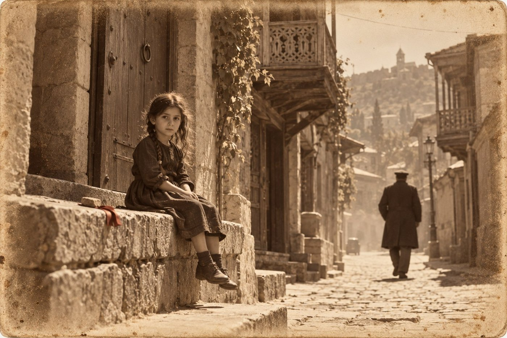

Волк

Хроника
«Тифлисский листок», 14 июня 1907 года
Вчера, 13 июня, около одиннадцати часов утра, на Эриванской площади в фаэтон, в котором под конвоем казаков перевозились из почтовой конторы в Государственный банк казённые деньги, брошено несколько бомб. Похищено 250 000 рублей. Есть убитые и раненые; число их выясняется. Площадь оцеплена войсками.
1
Эту заметку писал я, и в ней шесть строк. Больше редактору не позволили, а мне было не до того.
В одиннадцатом часу я сидел в редакции над стихами. Стихи в нашу газету носят гимназисты. Редактор говорит, что сам виноват: пять лет назад напечатал одного, длинного и косноязычного, который в стихах бежал из городов в лес, и с тех пор несут все. Я дошёл до третьего леса за утро, когда в окне звякнуло стекло.
Звякнуло несильно, как от ломовой телеги. Потом ударило ещё раз и ещё, и наборщик в дверях сказал по-армянски слово, которого я не знаю. После этого стало слышно, как стреляют.
Я бежал к площади навстречу людям. Они бежали молча, и это было страшнее крика. Женщина несла в подоле черешню и не замечала, что несёт. У сквера билась на мостовой лошадь. Мостовая была усыпана стеклом, и над площадью висел жёлтый дым, от которого першило в горле.
К фаэтону меня не пустили. Казак в оцеплении держал винтовку поперёк груди и смотрел сквозь меня. Я успел увидеть опрокинутый лоток, чью-то фуражку и тёмное на камнях, а потом меня взяли за локоть.
Это был городовой из первого участка, которого я знаю в лицо три года.
— Вас пристав ищет, — сказал он. — Не здесь. Во дворе.
2
Двор был в двух кварталах от площади, на сололакской стороне, уже в участке князя. Обыкновенный двор с галереей и тутовым деревом. Под деревом, спиной к стене, сидел молодой человек в дорожном пиджаке, уронив голову на грудь, как сидят пьяные.
Князь стоял над ним, опираясь на палку. С пятого года он ходит с палкой и шагов вслух уже не считает.
— Его принесли с площади? — спросил я.
— Его никто не нёс. Дворник нашёл его здесь через четверть часа после взрыва и побежал за мной, потому что на площадь его не пустили. Поглядите на него и скажите, что вы видите.
Я поглядел. Пиджак был цел. На лице, на руках, на рубашке не было ни крови, ни копоти. Башмаки были в пыли, но в дорожной, серой, а не в той жёлтой, что села на всех, кто был на площади.
— На нём ничего нет, — сказал я.
— На нём ничего нет, — повторил князь. — На площади сегодня убило людей, и ещё будут умирать до вечера. Этого запишут к ним, если я не помешаю. Очень удобный день, чтобы умереть в двух кварталах от бомбы.
Доктор Гурвич приехал через полчаса: я послал за ним того же городового. Он осмотрел сидящего, не трогая с места, потом попросил положить. Пальцы его прошли по шее сзади и остановились.
— Вот здесь, — сказал он. — Между вторым и третьим. Бомба так не умеет. Это сделано рукой, одной, и человек знал, куда её класть. Испугаться он не успел.
Князь кивнул, будто ему назвали цену, которую он и ждал.
Когда мёртвого положили на спину, я увидел лицо. Я видел его два с половиной года назад, гимназистом, в подворотне за рядами, и оно было тогда круглее и с пухом на губе.
— Тамразов, — сказал я. — Давид Тамразов.
— Да, — сказал князь. — Я узнал его раньше вас и хотел, чтобы вы сказали это сами.
3
Маро я встретил на лестнице. Она шла вниз без платка, чего я за ней не видел никогда, и говорила на ходу, не мне и не по-русски. Я понял два слова: «девочка» и «зелень».
С осени у неё живёт внучка, привезённая из деревни после смерти матери. Зовут её Зоя, ей лет восемь, и по-русски она знает «здравствуйте» и «нельзя». Меня она зовёт Сандро, как князь не зовёт никогда, и поправляет мне грузинские слова с удовольствием, которого не скрывает. В десять утра её послали за зеленью на угол. Угол этот смотрит на площадь.
Я побежал назад тем же путём и не добежал. Она сидела на каменном приступке у ворот, в десяти шагах от дома, и болтала ногами. Одна коса у неё была заплетена, другая распустилась. Зелени при ней не было.
Маро схватила её так, что девочка ойкнула, и только потом заплакала сама.
Рассказывала Зоя охотно. Я понимал через слово, и Маро переводила мне остальное, утирая лицо. Бухнуло, все побежали, она тоже побежала и упала. Корзинку потеряла. Потом пришёл дядя, взял её на руки и понёс. Солдаты его пустили. Он спросил, где она живёт, она сказала: у князя. Он принёс её сюда, посадил на камень и велел сидеть, пока не придёт бабушка.
— Добрый человек, — сказала Маро и перекрестилась. — Дай ему Бог.
— Какой он был? — спросил я по-грузински, как умел.
Зоя подумала.
— Большой, — сказала она. — Не как ты.
Тогда мне этого хватило. Я был рад, что она цела, и больше ни о чём не спросил.
4
Карманы мёртвого князь разбирал у себя в участке, при мне и при письмоводителе. Билет третьего класса из Баку, вчерашний. Четыре рубля с мелочью. Перочинный нож. Письмо от матери, по-армянски, читанное много раз. И четвертушка бумаги, сложенная вчетверо, без обращения и без подписи:
«13-го, в одиннадцать. У сквера, со стороны площади. К вам подойдут с тростью».
Почерк был канцелярский, круглый, какой ставят в училищах.
— Его вызвали, — сказал я.
— Его вызвали, и он приехал. После суда отец отправил его в Баку, к дяде в контору, и правильно сделал. Два года он там сидел тихо. Теперь кто-то написал ему, и он купил билет третьего класса на свои.
Князь положил записку на стол и накрыл ладонью.
— Он пришёл к скверу раньше срока, как приходят честные люди. А тот, от кого он уехал в Баку, шёл за ним. Бомбы этот человек не бросал и о ней не знал. Он услышал её вместе со всеми и раньше всех понял, что четверть часа никто в городе не будет смотреть по сторонам.
Он открыл ящик стола и достал бумажник, а из бумажника сложенный листок, протёртый на сгибах. Я знаю этот листок с января пятого года. Князь носит его при себе и ни разу при мне не развернул.
Он и теперь не развернул.
— Мгели, — сказал он.
Письмоводитель поднял голову. Слово было сказано негромко, тем голосом, каким князь называет в протоколе фамилию.
— Двор другой, а рука та же, сзади. Гарегина он взял за день до присяги, этого за минуту до встречи. Он не любит, когда на него показывают пальцем.
— Кто должен был подойти с тростью? — спросил я, хотя знал.
— Вы знаете, — сказал князь. — Он не подошёл. Думаю, сюда он придёт сам.
5
Ротмистр Вележев пришёл вечером, и не в участок, а на квартиру. Князь Луарсаб Атенели сидел на балконе, нога на табурете, и считал, сколько раз за день на площади меняли караул. Вышло четыре.
Трость ротмистр нёс в руке. Он сел, не дожидаясь приглашения, чего прежде не делал, и положил трость на колени.
— Тамразова вызвал я, — сказал он. — Записка писана в моём управлении. Я полагаю, она у вас.
— У меня.
— Я не дошёл до сквера сорока шагов, когда ударило. Потом я до трёх часов искал его среди раненых.
Князь молчал. Он сорок два года слушал людей, которые начинают с того, о чём их не спрашивали.
— Два года я не трогал этого человека, — продолжал ротмистр. — Я говорил тогда вашему газетчику: мне удобнее, чтобы господин Мгели полагал, будто его не ищут. Весной у меня появился человек, на которого стоило показать. Мне нужен был тот, кто видел лицо. Таких трое. Чиладзе выслан и молчит. Гимназист сидит в тюремном замке и со мною не говорит. Оставался Тамразов.
— И вы выписали мальчика из Баку.
— Я выписал свидетеля. О дне и часе знали в управлении трое.
Он назвал письмоводителя и назвал филёра, который должен был стоять у сквера. Третьего он не назвал. Князь не спросил: третий сидел перед ним.
— Я пришёл просить вас, — сказал ротмистр, и видно было, что слово это ему непривычно. — Своими людьми я его искать не могу, пока не знаю, который из них пишет на сторону. У вас дворники, духанщики, извозчики. Тамразов где-то ночевал, где-то ел. За ним шли.
— Кто тот человек, на которого стоило показать?
— Этого я вам не скажу.
— Тогда я буду искать того, кто убил в моём участке, — сказал князь. — Найду, возьму сам. Ваш ли это окажется человек, мне всё равно.
Ротмистр встал. У двери он задержался.
— Мне, признаюсь, жаль мальчика, — сказал он.
Князь поверил. Он поверил и другому, чего ротмистр не говорил: что жаль ему не одного мальчика, а ещё и двух лет работы. Когда гость пошёл вниз, князь сосчитал ступени по звуку. Вышло девятнадцать, и трость ни разу не стукнула.
6
Искать начали с вокзала, и на другой день извозчик показал Ортачалы.
Духан Бичико стоит над Курой, далеко от центра, и ходят туда те, кому в центре делать нечего. Я не был у него с позапрошлой весны. Он узнал меня, вытер стол и сказал, что про бомбы ничего не знает и знать не хочет.
— Я не про бомбы. Позавчера вечером у тебя ел приезжий. Молодой, армянин, в дорожном пиджаке.
— Ел. Лобио и хлеб, вина не взял. Заплатил, спросил, можно ли лечь на тахте до утра, я пустил за двугривенный. Тихий. Письмо читал.
— С ним кто-нибудь говорил?
— С ним никто. — Бичико посмотрел в окно, на двор. — А во дворе сидел человек. Пришёл после него, сел под навесом и просидел, пока я не закрыл. Я ему вынес вина, он не тронул. Человек, который сидит в духане и не пьёт, или больной, или на службе. На больного он не похож.
— Какой он?
— Большой. Руки вот такие. Шапку не снимал. По-грузински спросил воды, и я ему дал воды.
— Чисто спросил?
Бичико подумал, как думают над счётом.
— Правильно спросил. Грузин так правильно воды не просит.
Больше он ничего не знал. Пока он ходил за сдачей, я смотрел на стену. Позапрошлой весной на ней висел лубочный генерал. Теперь там была прибита чёрная клеёнка, и на клеёнке стоял олень.
Олень был написан неправильно: ноги тонкие, как палки, шея длинная, бока белые, и стоял он ни на чём, в черноте. Глаза у него были человеческие. Я ничего не понимаю в живописи, а отвести от него глаз не мог.
— Это Никала, — сказал Бичико, вернувшись. — Маляр. Вывеску мне писал, а потом говорит: дай клеёнку, я тебе зверя напишу. Неделю у меня обедал за этого зверя. Гости жалуются: смотрит. Сниму, наверное.
— Не снимай, — сказал я.
Он пожал плечами. Я заплатил за вино, которого не пил, и вспомнил, что он только что сказал мне про таких людей.
7
Про дядю Зоя вспомнила сама, в тот же вечер, и рассказала не мне, а кукле.
Кукла у неё тряпичная, деревенская, с угольными глазами. Я сидел у князя с тетрадью и слышал, как на галерее идёт разговор на два голоса: Зоя говорила за себя и за куклу. Кукла упала, заплакала, и её понесли домой.
Я вышел, потому что князь поднял палец.
Зоя несла куклу на левой руке, прижав к плечу. Правая ладонь лежала у куклы сзади на шее и держала тряпичную голову, чтобы та не глядела назад.
— Он тебя так нёс? — спросил я.
— Так.
— Зачем он голову держал?
— Чтобы я не смотрела. Он сказал: не смотри туда, там дядя спит.
Князь у меня за спиной перестал дышать, и я это услышал.
— Какой дядя спит? Где?
— Во дворе. Где дерево. Он оттуда вышел, а я на улице сидела и плакала. Он сказал: не плачь. И взял.
Она посадила куклу на перила и поправила ей платок. Потом посмотрела на меня с тем удовольствием, с каким поправляет мои слова.
— Он говорит как ты.
— Как я?
— Все слова знает, а говорит как ты.
Она показала, как: вытянула губы и произнесла «бабушка» по-грузински, старательно и деревянно. Вышло похоже на меня, и я покраснел.
— Он спросил, как тебя зовут?
— Спросил. Я сказала.
Князь позвал Маро и сказал ей несколько слов. Маро взяла девочку за руку и увела в комнаты, а кукла осталась на перилах, с головой набок.
— Он убил в том дворе, вышел на улицу и увидел, что оцепление уже ставят, — сказал князь. — Одного бы его остановили и спросили. Человека с плачущим ребёнком на руках не спрашивает никто. Она сказала ему, чья она, и он донёс её до моих ворот. Не побоялся. Или хотел поглядеть, где я живу.
— Она его узнает.
— Узнает. И он это понимает не хуже нас.
8
Вера Львовна уезжала пятнадцатого, через Баку и Ростов.
Я узнал об этом за два дня, от Фейги, и не удивился. Курсы в Тифлисе она прошла все, какие были. В Петербурге её ждали другие, настоящие, и место на них стоило двух лет переписки.
Вокзал был полон жандармов. После тринадцатого числа багаж вскрывали у всех, и у вагонов стояли столы, на которые вываливали корзины. У Веры Львовны была одна корзина, с книгами. Унтер перелистал каждую, держа за корешок и тряся, будто из словаря могли выпасть пятисотрублёвые билеты.
— Вы печатаете номера? — спросила она, глядя на его руки.
— Со вчерашнего дня. Сто тысяч было в пятисотенных, и номера в банке записаны. Редактор говорит, что это первое полезное, что мы напечатали за год.
— У меня ни одной нет. Можете проверить.
Мы оба улыбнулись, и на этом лёгкое кончилось.
— Я не вернусь, Александр Иванович, — сказала она. — Я говорю это не для того, чтобы вы возразили. Мне там есть что делать, а здесь я три года перевожу чужие песни сапожникам.
— Вы переводили их мне.
— Вам уже не нужно. Вы теперь сами понимаете половину, а через год поймёте всё. — Она взяла корзину, которую унтер наконец завязал. — Вы тоже не вернётесь, только в другую сторону. Вы приехали сюда на месяц, за дедом. Посмотрите на себя: вы торгуетесь по-грузински.
Я хотел сказать, что это неправда, и не сказал, потому что утром торговался.
Она подала мне руку, как подают товарищу. Поезд тронулся, и я не пошёл за вагоном.
Я стоял на перроне, пока был виден последний вагон, и думал, что должен чувствовать больше, чем чувствую. Потом я поймал себя на том, что смотрю не на поезд, а на людей у столов и ищу среди них большого человека в шапке.
9
Восьмую строфу я читал сам. Так заведено с пятого года: я читаю вслух, князь поправляет смысл, а с осени Зоя поправляет выговор, и её поправок больше.
«Здесь волка зовут бирюк. Слово не русское, его принесли татары, и оно прижилось.
Так зовут того, кто ходит один и к чужому огню не идёт.
Первую зиму так звали меня. Я не обижался: у нас волком назовут мальчика, чтобы рос крепким.
Потом жена сказала мне: бирюк не тот, кто один, а тот, кто сам так захотел.
Я не хотел, Нино. Я только не знал слов.
К весне я знал их сорок, и звать меня так перестали».
Слово «мгели» стоит в первой строке, и я споткнулся на нём, как спотыкаюсь всегда: два согласных в начале, которые русский рот не берёт без гласной между ними.
— Мгели, — сказала Зоя с порога. Её не звали, она пришла сама. — Не «мыгели». Мгели.
Я повторил. Она покачала головой и ушла, а слово осталось в комнате.
— Он это слово выбрал, — сказал я. — Мой дед получил своё от чужих и за зиму от него избавился. А этот взял сам, на чужом языке, и носит.
— Ваш дед учил слова, чтобы его перестали звать волком, — сказал князь. — Этот выучил все слова, чтобы звали. Девочка права: он говорит как вы. Разница в том, зачем.
Он помолчал и прибавил то, чего я от него не ждал:
— Я сорок два года ловлю здешних. Здешнего я понимаю: у него мать, улица, духан, крёстный. За что-нибудь да возьмёшь. У этого нет улицы. Он пришёл в чужой город, взял себе чужое имя и убивает так, будто обнимает. Я не знаю, за что его брать.
— За ребёнка, — сказал я. — Он вынес ребёнка.
— Он вынес себя, — сказал князь. — Ребёнок был пропуск.
10
Ленту нашла Маро, шестнадцатого утром, когда вышла мести у ворот.
Лента лежала на каменном приступке, на том самом месте, где сидела Зоя. Красная, из косы, потерянная тринадцатого в толпе. Она была сложена вдвое и придавлена камешком, чтобы не унесло.
Маро обрадовалась и понесла её в дом. Князь взял ленту у неё из рук, посмотрел и положил в тот же бумажник, где лежит листок.
Маро он не сказал ничего. Мне он сказал, когда она вышла:
— Он был здесь ночью. Городовой стоял на углу и никого не видел.
— Зачем он её вернул?
— Чтобы я знал, что он знает. Ворота, девочку, имя. Это не угроза, угрожают иначе. Это он поздоровался.
С того дня Зоя не ходит за зеленью одна. Ей сказали, что на углу злая собака. Она не верит, но слушается. Ворота запирают в девять. Князь велел переставить свою кровать к окну, которое смотрит во двор, и говорит, что так прохладнее.
Ротмистру он о девочке не сказал. Я спросил почему.
— Он назвал мне двоих из троих, — ответил князь. — Пока я не знаю про третьего, в его управлении о ней не узнает никто.
«Тифлисский листок», 17 июня 1907 года
К событию 13 июня. В числе пострадавших значится неизвестный молодой человек, по виду приезжий, тело которого найдено в одном из дворов близ Эриванской площади. Личность его выясняется.
Эту заметку тоже писал я. Имя я знаю, и мать его знает: князь ходил к ней сам. Напечатать имя он не дал. Пока в газете стоит «неизвестный», тот, кто убил, может думать, что двор сошёл за площадь.
Думать так ему недолго. Он вернул ленту, значит, сам не верит, что его не ищут.
Я три года учу язык, на котором меня зовут Сандро. Где-то в этом городе живёт человек, который выучил его лучше меня. Зоя слышит нас одинаково.